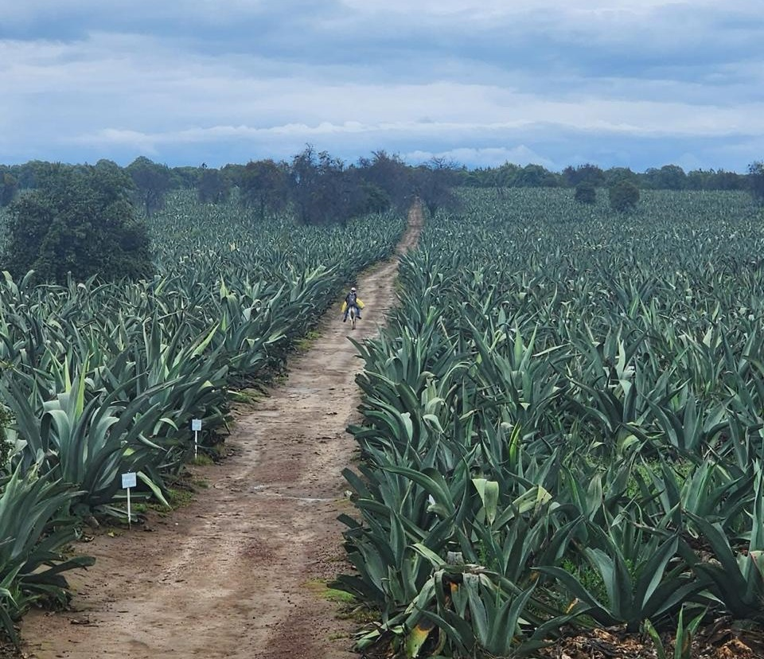

¡Descubre la Ruta al Santuario de las Luciérnagas!
¿Qué tenemos preparado para ti?
üåü Vive la magia de las luci√©rnagas con nuestro itinerario especial üåü
Cada sábado a las 12:00 pm, comienza tu aventura en el Santuario de las Luciérnagas en Nanacamilpa, Tlaxcala.
Descubre el espectacular brillo de millones de luciérnagas, una experiencia única que solo puedes vivir entre mediados de junio y agosto.
Recorre senderos mágicos acompañado por guías expertos que compartirán contigo fascinantes historias y datos sobre estos maravillosos insectos.
Termina tu viaje el domingo a las 8:00 pm, llevando contigo recuerdos inolvidables y una profunda conexi√≥n con la naturaleza. üåå
Duración.
• La ruta tiene una duración de dos días y una noche planeada para realizarse los fines de semana (de sábado a domingo) con actividades durante la tarde-noche del sábado y actividades durante la mañana y tarde del domingo.
• Las fechas establecidas son las siguientes:
• La temporalidad para esta ruta es solamente los meses de junio-agosto, ya que se requiere que comience la temporada de lluvias en Nanacamilpa para poder observar el espectáculo de las luciérnagas.
Itinerario detallado.
Sábado

1. Salida a las 12 am de CDMX desde punto de encuentro con dirección Centro Nanacamilpa, Tlaxcala.
2. Llegada al Centro aproximadamente a las 2 pm para baño y comida en restaurante Tequexquite.
3. Recorrido libre en el Centro de Nanacamilpa.

4. Traslado a las 5 pm del Centro Nanacamilpa al lugar de hospedaje (glamping).
5. Tiempo libre para recorrer el lugar de hospedaje y descansar.
6. Salida a las 6:45 pm con dirección al Santuario de las Luciérnagas para empezar con la observación de flora y fauna. Duración: aproximadamente 3 horas
7. Regreso a las 10:30 pm al lugar de hospedaje.
Domingo
1. Tour de hongos silvestres a las 6 am con duración aproximada de 2 hrs, con desayuno incluido.
2. Salida a las 10 am al Rancho Magueyero San Isidro donde realizaremos un taller de educación ambiental y degustación. Duración aproximada de 2 hrs.
3. Traslado a las 3 pm al Centro de Nanacamilpa para que nuestros clientes puedan comprar souvenirs y disfrutar de todo lo que ofrece el Centro.

4. Traslado a las 6 pm a la CDMX.
5. Llegada a la CDMX a las 8 pm.
Traslados.
Traslado redondo estación de metro 18 de marzo (Ciudad de México) - Santuario de las luciérnagas (Nanacamilpa, Tlaxcala)
Traslado Santuario de las luciérnagas-Glamping Octli-Rancho Magueyero San Isidro "Ruta Del Pulque"
Lugares, actividades y servicios.
Lugares a visitar.
Santuario de las luciérnagas en el Bosque de Nanacamilpa:
El Santuario de las Luciérnagas está situado en la zona ecológica de Nanacamilpa Tlaxcala, en la parte más alta del estado en la región del Espolón de la Sierra Nevada. Es un bosque de pino, encino y oyamel, conocido a nivel internacional por viajeros amantes de la naturaleza.
Rancho Magueyero San Isidro:
Es un rancho pulquero en el cual ofrecen productos a base del maguey pulquero, así como un tour para conocer el proceso de elaboración del pulque. Lo atiende la familia, lo que le da un toque especial, apasionados de lo que hacen.
Actividades a realizar.
Observación de flora y fauna descriptiva en el Santuario de las Luciérnagas.
Agroturismo en el tour de hongos.
Visita al centro de Nanacamilpa.
Actividad sustentable: Taller de educación ambiental en el Rancho Magueyero, donde se explicará el proceso de extracción del aguamiel y la preservación del maguey pulquero.
Servicios incluidos.
Alojamiento:
Glamping Deluxe para dos personas, con internet, ducha, baño completo, toallas, y cama matrimonial. Incluye desayuno continental.
Alimentos y bebidas:
Comida del sábado en el restaurante Tequexquite y desayuno en el tour de hongos.
Transportación:
Transporte privado por la empresa Aleni.
Seguro de viaje:
Proporcionado por AXA, con un costo de $343 MXN.